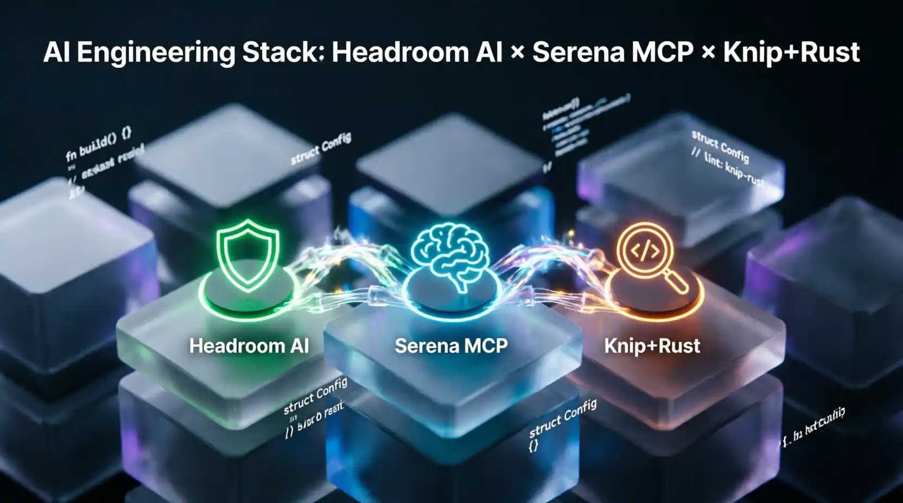

Quando a IA encontra a Engenharia de Software de alto nível: o Caso T9 no Projeto Jarvis
Hoje, automatizamos uma tarefa crítica e historicamente arriscada: a limpeza de código morto (dead code) em um monorepo complexo. Mas não foi uma simples execução de script cego. Foi um fluxo orquestrado, seguro e 100% rastreável.

A stack que fez a mágica acontecer
- Headroom AI — proxy inteligente que otimiza cache e custos de API em tempo real.
- Serena (MCP) — o "cérebro" que fornece contexto semântico profundo do código (o agente "entende" o projeto, não apenas lê texto).
- Knip (com fallow-rs) — varredura estática de alta performance para identificar código morto com precisão cirúrgica.
O resultado da Operação T9
- 4 dependências LangChain abandonadas removidas (47 pacotes a menos no node_modules).
- 8 arquivos de scratch/componentes mortos deletados com segurança.
- 64 testes passando (100% de sucesso) e build do dashboard otimizado para 6.06s.
O diferencial
O agente detectou um falso-positivo (crypto.ts), reverteu a exclusão e documentou o motivo no checklist, provando que tinha entendimento real das referências cruzadas do projeto.
Tudo isso gerou commits atômicos, documentação atualizada em tempo real e zero regressão.
Bônus de performance
Durante a sessão, o Headroom AI atingiu 94% de cache hit rate, otimizando automaticamente o uso de cache do provedor e reduzindo custos de API em tempo real. Não foi sobre comprimir texto — foi sobre engenharia de infraestrutura aplicada a IA.
Isso não é apenas "usar IA". É Engenharia de Software aplicada à autonomia de agentes.